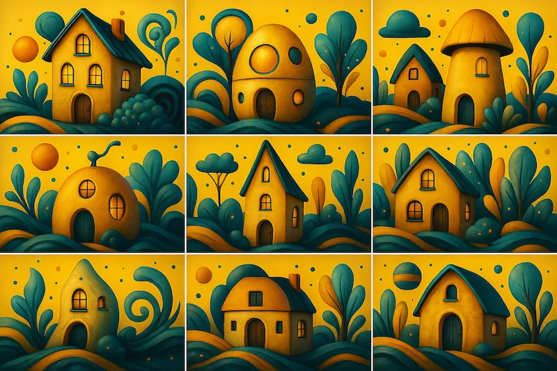

The Inditopian Manifesto Founding vision of the Utopian Popular Front. Seeking a Techno Cultural Revolution based on individual optimisation. Updated: 22 June 2025
Trilateral Inquiry Learning Explore a three-part enquiry model for education that sharpens thought, discussion, and understanding. Updated: 23 May 2025
Civic Base Democracy Rethink how government works — from representation to participation — with a civic-first approach. Updated: 23 May 2025
 Breakpoint Capitalism A new system of wealth structure and land use designed for a future of abundance and equity. Updated: 23 May 2025
Beacon Signal & Sky Language A surreal communication concept set in a stylised galactic sky — where abstraction meets purpose. Updated: 23 May 2025
Imaginative Micro Housing A gallery of quirky, surreal house forms that challenge our ideas of structure, style, and simplicity. Updated: 23 May 2025
AI & Human Network Envisioning a shared information ecosystem between intelligent agents and humans — grounded in mutual benefit. Updated: 23 May 2025